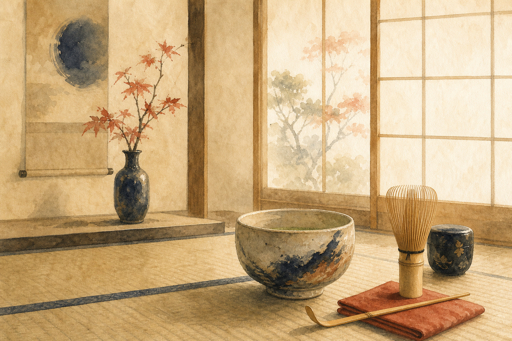
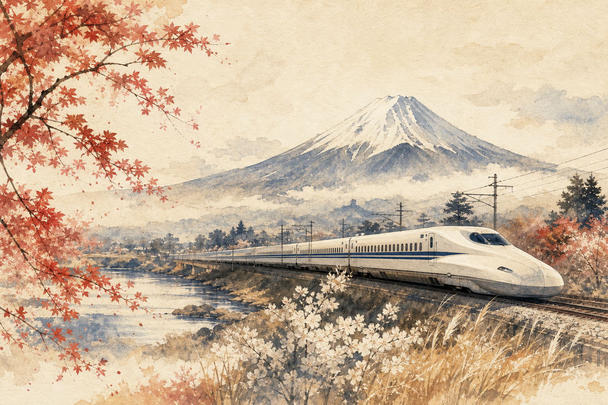
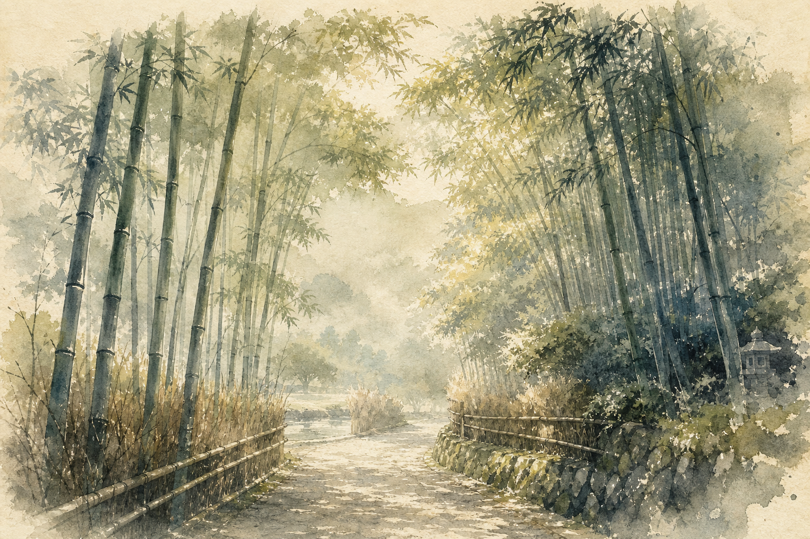
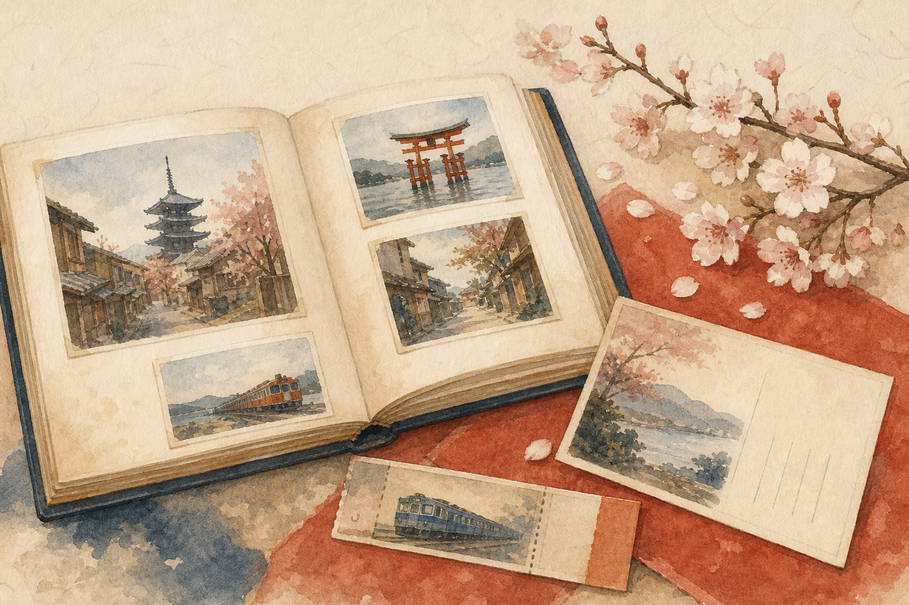

La pausa del
té.
Una ceremonia íntima para aprender a mirar el tiempo de otra manera.
KIZUNA TRAVEL BUREAU · JAPÓN CON ALMA
No organizamos simplemente viajes.
Diseñamos recuerdos.
KIOTO · PRIMERA LUZ
NUESTRA FILOSOFÍA
En KIZUNA creemos que un viaje no se mide por los kilómetros recorridos ni por la cantidad de lugares visitados.
Se mide por los recuerdos que siguen acompañándote años después.
Por eso cada itinerario, cada recomendación y cada detalle están pensados para que algún día, al mirar atrás, recuerdes exactamente cómo te sentías en ese instante.
Porque los mejores recuerdos merecen existir.
NUESTRO PROGRAMA ESTRELLA
01 / PROJECT JAPAN
Un recorrido diseñado para conocer Japón con calma. Porque algunos de los mejores momentos nunca aparecen en un mapa.
Explorar Project Japan →Cada destino cuenta una parte de la historia. Juntos forman el viaje.
SENSACIONES

Una ceremonia íntima para aprender a mirar el tiempo de otra manera.

El paisaje cambia desde la ventanilla del Shinkansen.

Senderos tranquilos y santuarios que guardan siglos de silencio.

Porque algunos de los mejores recuerdos nunca aparecen en el itinerario.
“Los mejores recuerdos rara vez aparecen en el itinerario”
Cada experiencia ha sido cuidadosamente seleccionada para favorecer recuerdos duraderos.
CUADERNO DE VIAJE
Ver todos los artículos →AGENDA KIZUNA · JAPÓN
Ver todos los eventos →Encuentros culturales, rutas y experiencias seleccionadas por KIZUNA. Reserva tu plaza o guárdalos en tu calendario.
HABLEMOS DE TU PRÓXIMO VIAJE
Cuéntanos cómo imaginas Japón. El resto lo diseñamos juntos.